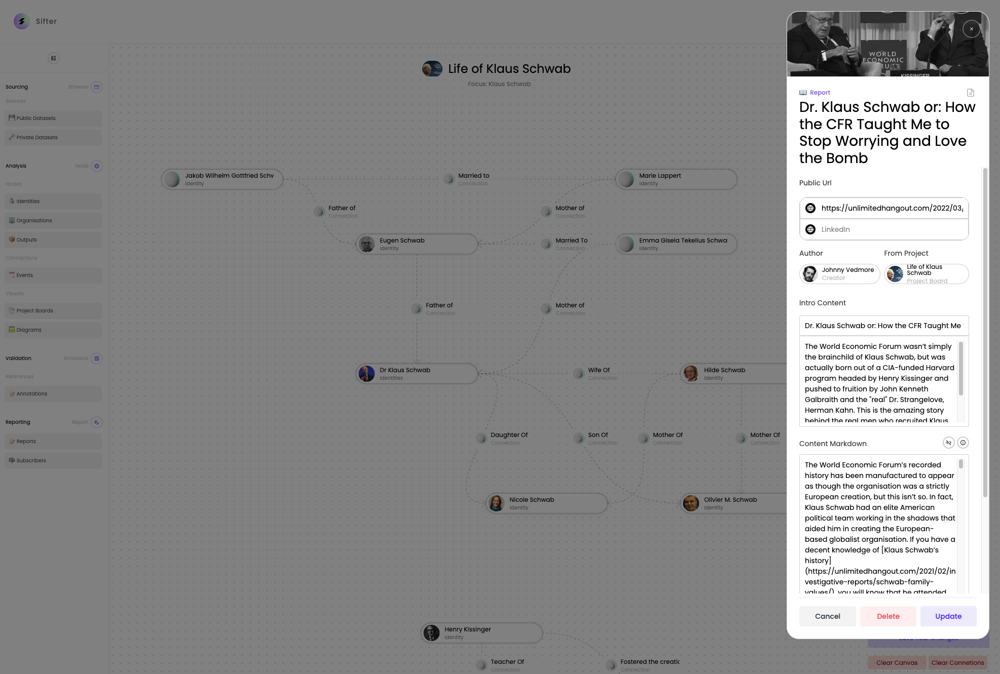
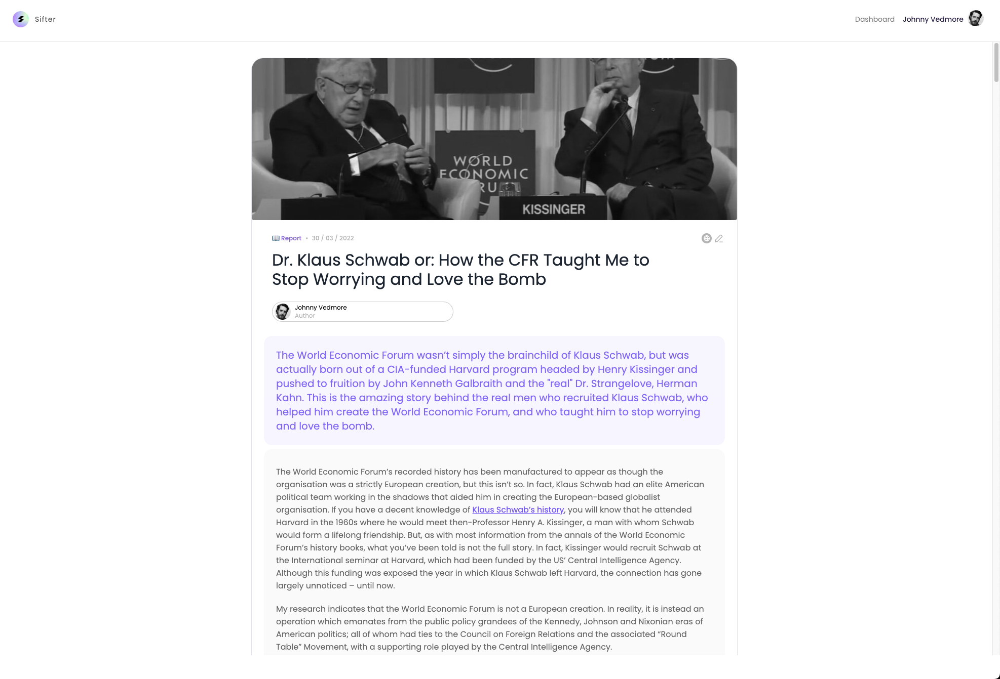
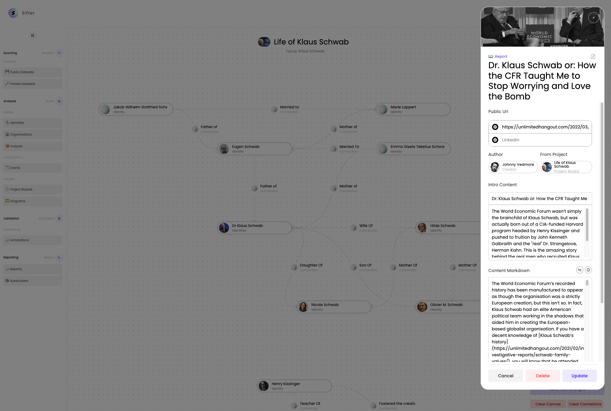
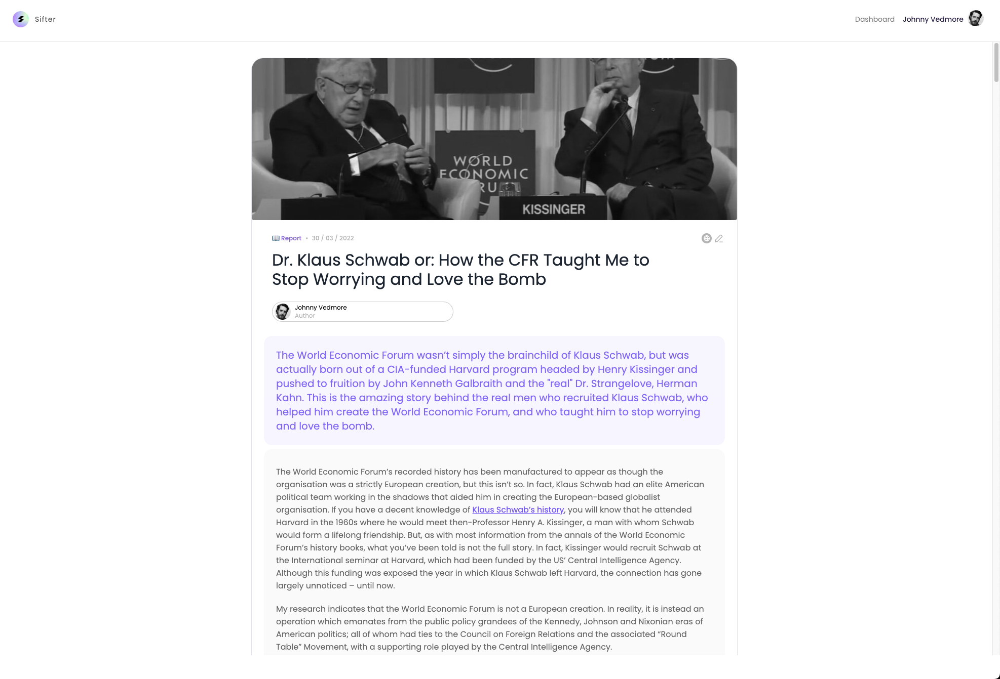

Earn a living from the raw evidence of investigation
We empower any individual to ✍️visualise their source evidence, and get paid for it by their
🤷🏻 Audiences.
Get Informed from 🕵 Investigators who share their sources
Gain access to the ✨ raw evidence of investigations, delivered directly to you as ✉️ Email newsletters.
How it works...
1. Search for or Upload raw evidence
2. Map out visual stories, from the evidence collected
3. Publish interactive diagrams within articles as emails
#1. 📝 We give you tools to save your sources
Use local files, or our Browser extension, to import text snippets from any website on the web.

#2. 🗄 We help you manage all your findings, notes & files
Build visual stories, from the evidence collected. Using rich visual network diagrams, to better understand your case, as well as find connections you didn't know exist.
#3. 🔬We make it easy for you to map out your findings
Build visual stories, from the evidence collected. Using rich visual network diagrams, to better understand your case, as well as find connections you didn't know exist.
#4. 📮As you write up your stories, we help you draft and publish it
Publish the diagrams within articles as emails. Directly embed your visual research as interactive embeds. Use either in your own publishing platform or in sifter.
 
1. Subscribe to your favourite investigator
2. Get their email newsletters in your email inbox
3. Interact with the source research in each article
#1. 🔦 We help you find topics you want to learn about
1. Subscribe to your favourite investigator
#2. 📮We then deliver these topics as articles to your inbox
2. Get their email newsletters in your email inbox
3. Interact with the source research in each article